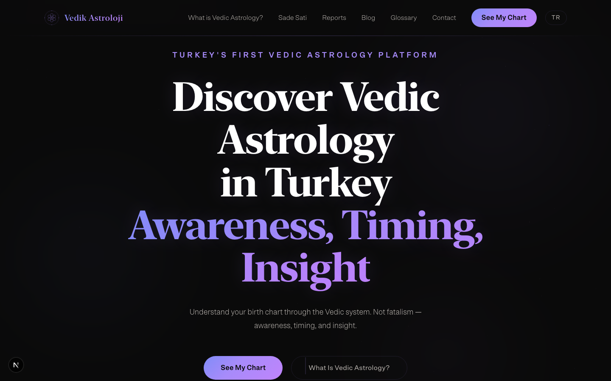
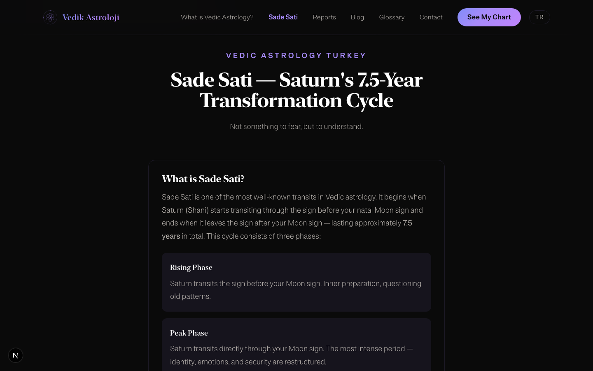

Vedic Turkiye
Zero market
Turkey's astrology market is $5M+. Faladdin alone reached 20 million downloads. Vedic astrology in Turkey: zero digital products. 2–3 practitioners, all offline.
Dr. Sugata — PhD from Amrita University, 17 years of practice, author of "Karma ve Karmanın Efendisi: Saturn," Sanskrit instructor. The only expert with an academic background in the region. Needs a platform.

Not fortune-telling — education
2025: Faladdin's founder was detained. "Fal" (fortune-telling) carries legal risk in Turkey. Positioning decision: education and self-awareness, not predictions.
"Shows a tendency" instead of "this will happen." Classical texts (BPHS, Phaladeepika) as the source, not intuition. Platform brand, not personal consulting. Consultations, courses, community — moved to a future personal site for the expert.

Birth chart calculator
Step-by-step form: date → time → city. Three APIs orchestrated: VedAstro for calculations, OpenStreetMap for geocoding, TimeAPI for timezones.
AI interprets the chart. Free tier: Groq (Llama 3.3 70B). Paid reports: Claude only — quality must match the price. Calculator launched in beta. The expert tested her own chart, found errors. Accuracy over speed.

Three revenue tiers
Free tier: calculator, blog, 50+ term glossary. Goal — SEO traffic and email capture. Zero competition for Turkish Vedic search terms.
Paid reports: Sade Sati (Saturn transit), birth chart, bundle. 799–1,499 TRY with installments via Shopier. Taksit (installment payments) is a cultural norm in Turkey.
Future: "VedikCircle" subscription, an 8-week course, personal consultations. Each tier uses a different AI model. Free stays free. Premium pays for quality.

Role
Sole designer and developer on the project. Researched the market and regulatory risks, split the brand into a platform and the expert's personal site, designed a step-by-step calculator with Turkish-first UX and Sanskrit term explanations.
Built the technical architecture around five APIs and an AI model cascade, wrote 50+ glossary terms, set up the SEO strategy, and shipped the project from strategy to deploy in one day.